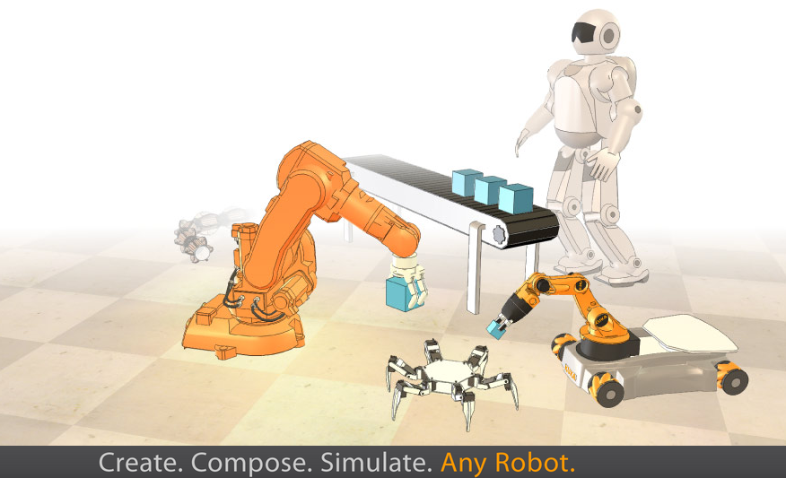

CoppeliaSim (V-REP)

- 官方网站：http://www.coppeliarobotics.com/
- 2019年11月由V-REP更名为CoppeliaSim
- 支持的物理引擎：ODE/Bullet/Vortex/Newton
- 教育版免费 / 商业版收费
引言
CoppeliaSim（前身为V-REP，即Virtual Robot Experimentation Platform）是一款功能全面的机器人仿真平台。它拥有非常完善的物理仿真引擎，支持移动机器人、飞行机器人、人型机器人、多足机器人以及多轴机械手的运动学仿真。CoppeliaSim的仿真程度非常高，不仅可以仿真机器人的本体与多种传感器，还支持障碍物以及地形 (空中、地面、水底) 的仿真。作为已经商业化的软件，相比Gazebo有更好的稳定性与交互体验。
核心特性
CoppeliaSim的设计理念是提供一个集成化的开发环境 (Integrated Development Environment)，将建模、编程、仿真和分析集于一体。其核心特性包括：
- 多物理引擎支持：用户可以在ODE、Bullet、Vortex和Newton四种物理引擎之间自由切换，针对不同仿真场景选择最合适的引擎
- 正/逆运动学求解器 (Forward/Inverse Kinematics Solver)：内置高效的运动学计算模块，支持任意运动链结构
- 碰撞检测 (Collision Detection)：提供快速且精确的碰撞检测功能，支持网格模型 (Mesh) 之间的干涉检测
- 最小距离计算 (Minimum Distance Calculation)：实时计算任意两个物体之间的最短距离
- 动力学仿真 (Dynamics Simulation)：精确模拟刚体动力学、关节摩擦、接触力等
脚本语言支持
CoppeliaSim支持使用多种编程语言编写控制脚本，十分适合于多机器人的仿真：
- Lua：CoppeliaSim的内置脚本语言 (Embedded Script Language)，支持直接在仿真场景中编写和调试
- Python：通过ZeroMQ Remote API或Legacy Remote API实现外部控制
- C/C++：适合对性能有较高要求的场景，通过Remote API或插件方式接入
- Java：提供Java版本的Remote API接口
- MATLAB：支持通过Remote API从MATLAB环境控制仿真
每个仿真对象 (Simulation Object) 可以附加独立的脚本，使得多机器人协同仿真的代码组织清晰且模块化。
远程API (Remote API)
CoppeliaSim提供两种远程API接口方式：
- ZeroMQ Remote API：新一代远程接口，基于ZeroMQ消息库和CBOR数据序列化，性能优于旧版API，支持所有API函数的调用
- Legacy Remote API：基于自定义Socket通信的传统接口，功能完整但性能较低
通过Remote API，外部程序可以控制仿真的启动、暂停和停止，读写仿真对象的位姿 (Pose)、速度和传感器数据，实现仿真环境与外部算法的交互。
场景编辑器 (Scene Editor)
CoppeliaSim内置了功能强大的场景编辑器，用户可以通过图形界面 (GUI) 进行以下操作：
- 导入CAD模型 (支持STL、OBJ等格式) 并构建机器人模型
- 通过拖拽方式组装连杆 (Link) 和关节 (Joint) 的层级关系
- 配置物理属性如质量 (Mass)、惯性张量 (Inertia Tensor)、摩擦系数 (Friction Coefficient) 等
- 布置仿真场景中的环境物体和障碍物
路径规划 (Path Planning)
CoppeliaSim集成了OMPL (Open Motion Planning Library) 运动规划库，支持多种路径规划算法：
- RRT (Rapidly-exploring Random Trees)
- RRT*
- PRM (Probabilistic Roadmap Method)
- BiTRRT、LBKPIECE等
用户可以为移动机器人或机械臂 (Manipulator) 进行无碰撞路径规划，规划结果可以直接在仿真中执行和验证。
传感器仿真
CoppeliaSim提供丰富的传感器仿真功能：
- 视觉传感器 (Vision Sensor)：模拟相机图像采集，支持RGB、深度图 (Depth Map) 输出
- 近距离传感器 (Proximity Sensor)：模拟红外、超声波等测距传感器
- 力传感器 (Force Sensor)：检测关节或接触点的力和力矩
- 激光扫描仪 (Laser Scanner)：通过视觉传感器组合模拟激光雷达
内置机器人模型
CoppeliaSim自带大量常见的机器人模型，可直接在仿真中使用：
- 工业机械臂：UR系列、KUKA系列、ABB系列等
- 移动机器人：Pioneer系列、youBot等
- 人形机器人：NAO、Baxter等
- 无人机：四旋翼模型
教育与研究应用
CoppeliaSim在教育领域有广泛应用。其教育版 (Edu Version) 免费提供给学生和教育机构使用，包含完整的仿真功能。许多大学的机器人课程使用CoppeliaSim作为实验平台，学生可以在无需真实硬件的情况下学习机器人控制、运动规划和计算机视觉等内容。此外，RoboCup等国际机器人竞赛也曾使用CoppeliaSim作为仿真平台。
安装与版本
版本与授权
CoppeliaSim 提供以下授权版本：
| 版本 | 价格 | 限制 | 适用对象 |
|---|---|---|---|
| Edu（教育版） | 免费 | 仅限教育和研究用途，不可用于商业项目 | 学生、大学、研究机构 |
| Player（播放版） | 免费 | 只能运行已有场景，不能编辑 | 演示和展示 |
| Pro（专业版） | 付费 | 无限制 | 商业应用 |
当前（2026年）稳定版本为 v4.6.x 及以上。推荐始终下载最新版本以获得最新 API 和 bug 修复。
支持平台
CoppeliaSim 官方支持以下平台：
- Windows：Windows 10 / 11（64位）
- Linux：Ubuntu 20.04 / 22.04（64位，推荐）
- macOS：macOS 11 Big Sur 及以上（Apple Silicon 原生支持）
安装步骤（Linux）
# 从官网下载安装包（以 v4.6.0 为例）
wget https://www.coppeliarobotics.com/files/CoppeliaSim_Edu_V4_6_0_rev18_Ubuntu22_04.tar.xz
# 解压到目标目录
tar -xf CoppeliaSim_Edu_V4_6_0_rev18_Ubuntu22_04.tar.xz -C ~/
# 进入目录并启动
cd ~/CoppeliaSim_Edu_V4_6_0_rev18_Ubuntu22_04/
./coppeliaSim.sh
# 安装 Python ZeroMQ Remote API 客户端库
pip3 install coppeliasim-zmqremoteapi-client
Python ZeroMQ Remote API 实战
ZeroMQ Remote API 是 CoppeliaSim 推荐的 Python 接口方式，从 v4.3 起全面取代旧版 Legacy API。相比旧版，ZeroMQ API 的 Python 接口与 CoppeliaSim 内置 Lua API 完全一一对应，调用更简洁、性能更高。
基本连接与仿真控制
import coppeliasim_zmqremoteapi_client as zmq_client
import time
# 建立连接（默认连接本机 23000 端口）
client = zmq_client.RemoteAPIClient()
sim = client.require('sim')
# 启动仿真
sim.startSimulation()
print("仿真已启动")
# 获取场景中的对象句柄（handle）
# getObject 参数为场景层级路径，以 '/' 开头
robot_handle = sim.getObject('/UR5')
joint1_handle = sim.getObject('/UR5/joint1')
target_handle = sim.getObject('/UR5/target')
# 设置关节目标位置（单位：弧度）
sim.setJointTargetPosition(joint1_handle, 1.57) # 旋转约 90 度
# 等待仿真步进
time.sleep(2.0)
# 读取关节当前角度
pos = sim.getJointPosition(joint1_handle)
print(f"关节 1 当前角度: {pos:.3f} rad ({pos * 57.3:.1f} deg)")
# 读取物体位姿（返回 [x, y, z, qx, qy, qz, qw]）
pose = sim.getObjectPose(robot_handle, sim.handle_world)
print(f"机器人基座位置: x={pose[0]:.3f}, y={pose[1]:.3f}, z={pose[2]:.3f}")
# 停止仿真
sim.stopSimulation()
print("仿真已停止")
API 结构说明
ZeroMQ Remote API 的函数命名与 CoppeliaSim 内置 Lua API 完全一致，但去掉了 sim. 前缀并改为 Python 方法调用形式：
| 功能 | Lua 内置脚本 | Python Remote API |
|---|---|---|
| 获取对象句柄 | sim.getObject('/robot') |
sim.getObject('/robot') |
| 设置关节位置 | sim.setJointTargetPosition(h, val) |
sim.setJointTargetPosition(h, val) |
| 读取视觉传感器 | sim.getVisionSensorImg(h) |
sim.getVisionSensorImg(h) |
| 启动仿真 | sim.startSimulation() |
sim.startSimulation() |
步进控制模式
对于需要精确控制每一仿真步的应用（如强化学习），可使用步进（Stepping）模式：
client = zmq_client.RemoteAPIClient()
sim = client.require('sim')
# 启用步进模式：每次调用 step() 仿真前进一步
client.setStepping(True)
sim.startSimulation()
for step in range(100):
# 在此执行控制逻辑
sim.setJointTargetVelocity(joint_handle, 0.5) # 设置关节速度
# 推进仿真一步（仿真时间前进一个 dt）
client.step()
# 读取传感器数据
joint_pos = sim.getJointPosition(joint_handle)
sim.stopSimulation()
ROS 2 集成
sim_ros2_interface 插件
CoppeliaSim 通过 sim_ros2_interface 插件实现与 ROS 2 的通信。该插件将仿真中的传感器数据作为 ROS 2 话题发布，并订阅来自 ROS 2 的控制指令。
# 克隆并构建 sim_ros2_interface（以 Ubuntu 22.04 + ROS 2 Humble 为例）
source /opt/ros/humble/setup.bash
git clone https://github.com/CoppeliaRobotics/simROS2.git
mkdir build && cd build
cmake ../simROS2 -DCMAKE_BUILD_TYPE=Release
make -j$(nproc)
cp libsimROS2.so ~/CoppeliaSim_Edu_V4_6_0_rev18_Ubuntu22_04/
在 Lua 脚本中发布传感器话题
-- 仿真场景中的 Lua 子脚本示例
function sysCall_init()
-- 获取激光雷达视觉传感器句柄
laser_handle = sim.getObject('./LaserSensor')
-- 创建 ROS 2 Publisher（发布 LaserScan 消息）
pub = simROS2.createPublisher(
'/scan',
'sensor_msgs/LaserScan'
)
end
function sysCall_actuation()
-- 读取传感器数据并发布
local data, dist = sim.readProximitySensor(laser_handle)
if data > 0 then
local msg = {
header = {stamp = simROS2.getTime(), frame_id = 'laser_frame'},
range_min = 0.1,
range_max = 10.0,
ranges = {dist}
}
simROS2.publish(pub, msg)
end
end
订阅 cmd_vel 控制移动机器人
function sysCall_init()
left_motor = sim.getObject('./LeftMotor')
right_motor = sim.getObject('./RightMotor')
wheel_radius = 0.05 -- 轮半径（米）
axle_length = 0.3 -- 轮距（米）
-- 订阅 ROS 2 速度指令话题
sub = simROS2.createSubscription(
'/cmd_vel',
'geometry_msgs/Twist',
'cmd_vel_callback'
)
end
function cmd_vel_callback(msg)
local v = msg.linear.x -- 线速度（m/s）
local omega = msg.angular.z -- 角速度（rad/s）
-- 差速驱动运动学解算
local v_left = (v - omega * axle_length / 2) / wheel_radius
local v_right = (v + omega * axle_length / 2) / wheel_radius
sim.setJointTargetVelocity(left_motor, v_left)
sim.setJointTargetVelocity(right_motor, v_right)
end
与 Gazebo 的对比
| 特性 | CoppeliaSim | Gazebo（Ignition/Harmonic） |
|---|---|---|
| 上手难度 | 较低，图形界面友好 | 较高，配置文件复杂 |
| 物理引擎 | ODE/Bullet/Vortex/Newton（可切换） | DART/Bullet/ODE（Ignition） |
| 模型库 | 内置丰富，Edu 版免费 | 开源，社区模型丰富 |
| 传感器仿真 | 种类多，配置灵活 | 种类多，ROS 集成成熟 |
| Python API | ZeroMQ API，覆盖所有功能 | gz-python（功能较有限） |
| 快速原型 | 适合，拖拽式场景搭建 | 需要编写 SDF/URDF 文件 |
| 强化学习 | 通过 Python API 可控，步进模式支持良好 | Gym-Gazebo 等封装库 |
| 授权 | Edu 版免费，Pro 版收费 | 完全开源 |
机械臂仿真实例
UR5 拾放（Pick-and-Place）完整工作流
以下以 UR5 机械臂在 CoppeliaSim 中执行拾放任务为例，展示完整的 Python 控制流程：
import coppeliasim_zmqremoteapi_client as zmq_client
import numpy as np
import time
client = zmq_client.RemoteAPIClient()
sim = client.require('sim')
simIK = client.require('simIK') # 运动学求解插件
sim.startSimulation()
# 获取关节句柄列表
joint_handles = [
sim.getObject(f'/UR5/joint{i}') for i in range(1, 7)
]
# 获取末端执行器（工具中心点）和目标点句柄
tip_handle = sim.getObject('/UR5/tip')
target_handle = sim.getObject('/UR5/target')
def move_to_pose(target_position, target_orientation):
"""将目标点移动到指定位姿，通过逆运动学求解关节角度"""
# 设置目标位姿
sim.setObjectPosition(target_handle, target_position, sim.handle_world)
sim.setObjectOrientation(target_handle, target_orientation, sim.handle_world)
# 创建 IK 环境
ik_env = simIK.createEnvironment()
ik_group = simIK.createGroup(ik_env)
# 添加 IK 元素（末端到目标的约束）
simIK.addElementFromScene(
ik_env, ik_group,
sim.getObject('/UR5'),
tip_handle,
target_handle,
simIK.constraint_pose
)
# 求解 IK
result, reason = simIK.handleGroup(ik_env, ik_group, {'syncWorlds': True})
simIK.eraseEnvironment(ik_env)
return result == simIK.result_success
# 运动到抓取前准备位置
print("移动到准备位置...")
move_to_pose([0.3, 0.0, 0.4], [0.0, np.pi, 0.0])
time.sleep(2.0)
# 下降到抓取位置
print("下降到抓取位置...")
move_to_pose([0.3, 0.0, 0.2], [0.0, np.pi, 0.0])
time.sleep(1.5)
# 模拟夹爪闭合（通过设置力传感器或关节）
gripper_joint = sim.getObject('/UR5/gripper/joint')
sim.setJointTargetPosition(gripper_joint, 0.02) # 闭合
time.sleep(0.5)
# 抬起
print("抬起物体...")
move_to_pose([0.3, 0.0, 0.45], [0.0, np.pi, 0.0])
time.sleep(1.5)
# 移动到放置位置
print("移动到放置位置...")
move_to_pose([-0.3, 0.2, 0.45], [0.0, np.pi, 0.0])
time.sleep(2.0)
# 下降并释放
move_to_pose([-0.3, 0.2, 0.2], [0.0, np.pi, 0.0])
time.sleep(1.5)
sim.setJointTargetPosition(gripper_joint, 0.0) # 张开夹爪
time.sleep(0.5)
print("拾放任务完成")
sim.stopSimulation()
强化学习应用
CoppeliaSim 作为 Gymnasium 环境
CoppeliaSim 通过 Python ZeroMQ API 提供步进控制能力，天然适合作为强化学习环境的后端仿真器。以下展示如何将 CoppeliaSim 封装为 Gymnasium 兼容接口：
import gymnasium as gym
import numpy as np
import coppeliasim_zmqremoteapi_client as zmq_client
class CoppeliaSimEnv(gym.Env):
"""将 CoppeliaSim 仿真封装为 Gymnasium 标准环境"""
def __init__(self):
super().__init__()
self.client = zmq_client.RemoteAPIClient()
self.sim = self.client.require('sim')
self.client.setStepping(True)
# 定义动作空间：关节速度（6维连续）
self.action_space = gym.spaces.Box(
low=-1.0, high=1.0, shape=(6,), dtype=np.float32
)
# 定义观测空间：关节角度 + 末端位姿（6 + 7 = 13维）
self.observation_space = gym.spaces.Box(
low=-np.inf, high=np.inf, shape=(13,), dtype=np.float32
)
# 获取关节句柄
self.joint_handles = [
self.sim.getObject(f'/robot/joint{i}') for i in range(1, 7)
]
self.tip_handle = self.sim.getObject('/robot/tip')
self.target_handle = self.sim.getObject('/robot/target')
def reset(self, seed=None, options=None):
self.sim.stopSimulation()
self.sim.startSimulation()
obs = self._get_obs()
return obs, {}
def step(self, action):
# 执行动作：设置关节速度
for i, h in enumerate(self.joint_handles):
self.sim.setJointTargetVelocity(h, float(action[i]))
# 推进仿真一步
self.client.step()
obs = self._get_obs()
reward = self._compute_reward()
terminated = self._is_done()
return obs, reward, terminated, False, {}
def _get_obs(self):
joint_angles = np.array([
self.sim.getJointPosition(h) for h in self.joint_handles
], dtype=np.float32)
tip_pose = np.array(
self.sim.getObjectPose(self.tip_handle, self.sim.handle_world),
dtype=np.float32
)
return np.concatenate([joint_angles, tip_pose])
def _compute_reward(self):
tip_pos = self.sim.getObjectPosition(
self.tip_handle, self.sim.handle_world
)
target_pos = self.sim.getObjectPosition(
self.target_handle, self.sim.handle_world
)
dist = np.linalg.norm(np.array(tip_pos) - np.array(target_pos))
return -dist # 奖励为负距离
def _is_done(self):
tip_pos = self.sim.getObjectPosition(
self.tip_handle, self.sim.handle_world
)
target_pos = self.sim.getObjectPosition(
self.target_handle, self.sim.handle_world
)
dist = np.linalg.norm(np.array(tip_pos) - np.array(target_pos))
return dist < 0.02 # 距离目标 2cm 以内视为成功
def close(self):
self.sim.stopSimulation()
无头仿真（Headless Simulation）
在服务器或无显示器的环境中进行强化学习训练时，需要以无头模式运行 CoppeliaSim：
# 方法一：使用虚拟显示（Xvfb）
Xvfb :99 -screen 0 1024x768x24 &
export DISPLAY=:99
# 启动 CoppeliaSim（无 GUI 渲染，但保留物理仿真）
./coppeliaSim.sh -h scene.ttt &
# 然后运行 Python 训练脚本
python3 train_rl.py
# 方法二：直接使用无头模式参数
./coppeliaSim.sh -h -s scene.ttt
# -h: headless 模式，不创建 GUI 窗口
# -s: 自动加载指定场景
与其他仿真器的对比（强化学习场景）
| 特性 | CoppeliaSim | Gazebo | PyBullet |
|---|---|---|---|
| 物理精度 | 高（多引擎可选） | 高 | 中（偏快速） |
| Python API 完整度 | 高（覆盖全部仿真功能） | 中 | 高 |
| 步进控制 | 原生支持 | 支持 | 原生支持 |
| 无头模式 | 支持（需 Xvfb 或 -h 参数） | 支持 | 原生支持（无 GUI 依赖） |
| 仿真速度 | 中（与实时绑定） | 中 | 快（可超实时） |
| 模型格式 | URDF、SDF、VRML | SDF、URDF | URDF |
| 授权 | Edu 免费，Pro 收费 | 完全开源 | 完全开源 |
| 适合场景 | 复杂传感器仿真、工业机械臂 | ROS 集成、移动机器人 | 快速原型、接触丰富任务 |
Lua 脚本基础
CoppeliaSim 的内置脚本语言是 Lua，每个仿真对象都可以附加 Lua 子脚本（Child Script）来控制其行为。
脚本类型
| 脚本类型 | 运行方式 | 适用场景 |
|---|---|---|
| 非线程子脚本（Non-threaded） | 在主仿真循环中同步调用 | 绝大多数控制逻辑 |
| 线程子脚本（Threaded） | 在独立线程中运行 | 需要 sleep 或阻塞等待的场景 |
| 主脚本（Main Script） | 管理整个仿真生命周期 | 高级用户定制仿真循环 |
常用 Lua API 函数
-- 对象操作
handle = sim.getObject('/robot') -- 获取对象句柄
pos = sim.getObjectPosition(handle, sim.handle_world) -- 获取位置 [x, y, z]
sim.setObjectPosition(handle, pos, sim.handle_world) -- 设置位置
-- 关节操作
angle = sim.getJointPosition(joint_handle) -- 读取关节角度（弧度）
sim.setJointTargetPosition(joint_handle, math.pi / 2) -- 设置目标位置
sim.setJointTargetVelocity(joint_handle, 1.0) -- 设置目标速度（rad/s）
-- 传感器读取
result, dist = sim.readProximitySensor(sensor_handle) -- 读取接近传感器
result, img, resX, resY = sim.getVisionSensorImg(cam_handle) -- 读取相机图像
-- 仿真时间
t = sim.getSimulationTime() -- 获取当前仿真时间（秒）
简单差速移动机器人 Lua 控制示例
-- 非线程子脚本：附加在移动机器人对象上
function sysCall_init()
-- 获取左右轮电机句柄
left_motor = sim.getObject('./LeftMotor')
right_motor = sim.getObject('./RightMotor')
-- 获取接近传感器句柄（用于障碍物检测）
front_sensor = sim.getObject('./FrontSensor')
-- 初始速度设置（rad/s）
max_speed = 3.0
start_time = sim.getSimulationTime()
end
function sysCall_actuation()
-- 读取前方接近传感器
local detected, dist = sim.readProximitySensor(front_sensor)
if detected and dist < 0.5 then
-- 检测到障碍物，原地左转
sim.setJointTargetVelocity(left_motor, -max_speed)
sim.setJointTargetVelocity(right_motor, max_speed)
else
-- 直行
sim.setJointTargetVelocity(left_motor, max_speed)
sim.setJointTargetVelocity(right_motor, max_speed)
end
end
function sysCall_sensing()
-- 此回调在每个仿真步的感知阶段执行
-- 可在此记录传感器数据用于后续分析
end
function sysCall_cleanup()
-- 仿真结束时的清理工作
sim.setJointTargetVelocity(left_motor, 0)
sim.setJointTargetVelocity(right_motor, 0)
end
性能优化
在进行大规模强化学习训练或长时间仿真时，CoppeliaSim 的性能优化至关重要。
减少碰撞网格的多边形数量
物理引擎进行碰撞检测时使用专用的简化网格（Collision Mesh），而非渲染网格（Visual Mesh）。应将碰撞网格的多边形数量控制在最小必要范围：
- 在场景编辑器中，为每个对象的碰撞形状选择"凸包（Convex Hull）"或"包围盒（Bounding Box）"而非精确网格
- 对于机器人连杆，通常使用圆柱体或长方体近似碰撞形状即可满足仿真需求
物理引擎选择
| 物理引擎 | 速度 | 精度 | 适用场景 |
|---|---|---|---|
| ODE | 快 | 中 | 移动机器人、一般场景（默认推荐） |
| Bullet | 快 | 中 | 柔体、软体仿真 |
| Newton | 中 | 高 | 需要高精度动力学的场景 |
| Vortex | 慢 | 最高 | 工业级精密仿真（需授权） |
-- 在 Lua 脚本中切换物理引擎
sim.setInt32Parameter(sim.intparam_dynamic_engine, sim.physics_ode)
-- 可选值: sim.physics_ode / sim.physics_bullet / sim.physics_newton / sim.physics_vortex
无头训练时关闭渲染
在强化学习训练中，渲染是主要的性能瓶颈之一。在无头模式下，默认渲染会被跳过，但若使用视觉传感器仿真相机观测，仍会触发渲染。可按需降低视觉传感器的分辨率：
-- 在 Lua 脚本中降低视觉传感器分辨率
local cam_handle = sim.getObject('./Camera')
sim.setVisionSensorResolution(cam_handle, 64, 64) -- 训练时使用低分辨率
加速仿真（实时系数）
CoppeliaSim 默认以实时速度运行，可以在场景设置中调整仿真时间步长和实时系数：
-- 设置仿真时间步长（秒）
sim.setFloatParameter(sim.floatparam_simulation_time_step, 0.05)
-- 在步进模式下，仿真速度不受实时限制，完全由 Python 的 client.step() 调用速率决定
参考资料
- CoppeliaSim官方文档
- CoppeliaSim用户手册
- ZeroMQ Remote API文档
- sim_ros2_interface GitHub 仓库
- coppeliasim-zmqremoteapi-client PyPI
- Rohmer, E., Singh, S. P. N., & Freese, M. (2013). V-REP: A versatile and scalable robot simulation framework. IEEE/RSJ International Conference on Intelligent Robots and Systems.
- Gymnasium 文档：https://gymnasium.farama.org/